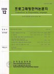

|  | 목차: [.PDF 73KB]편집사: [.PDF 44KB]연구논문
|
컴파일러는 상위 언어로 작성된 프로그램을 프로세서를 위한 하위 언어로 번역하는 역할을 한다. 이때 컴파일러는 상위언어로 작성된 프로그램을 동일한 의미(semantic)를 가진 Intermediate Representation (IR)으로 바꾼 뒤 코드 생성 작업을 하게 된다. 컴파일러가 코드 생성 작업을 잘하기 위해서는 보다 많은 정보를 IR에서 가지고 있어야 한다. 예를 들어서 프로그램 상의 hot spot을 찾아내기 위해서는 Control Flow Analysis를 해서 얻은 basic block들의 실행 빈도를 알아야한다. 그러나 이러한 정보는 바이너리 코드를 얻어서 실행해보지 않고서는 알 수 없는 정보이다.
이 논문에서는 이러한 불편을 줄이고자 컴파일러의 IR을 직접 시뮬레이션해 볼 수 있는 IR 시뮬레이터에 대해서 논하고자 한다. 시뮬레이션을 통해서 얻은 정보는 프로그램을 최적화하는데 유용하게 사용되며 나아가 프로그램을 가속화하기 위한 새로운 명령어를 설계하는 등의 일에 유용하게 사용될 수 있다.
C프로그램에서 발생할 수 있는 메모리 누수(memory leaks)를 실행 전에 찾아 주는 분석기를 제안한다. 이 분석기는 SPEC2000 벤치마크 프로그램과 여러 오픈 소스 프 로그램들에 적용시킨 결과 다른 분석기에 비해 상대적으로 뛰어난 성능을 보여준다. 총 1,777 KLOC의 프로그램에서 332개의 메모리 누수 오류를 찾아 냈으며 이 때 발 생한 허위 경보(false positive)는 47개에 불과하다(12.4%의 허위 경보율). 이 분석기 는 초당 720 LOC를 분석한다.
각각의 함수들이 하는 일을 간추려 그 함수들이 불려지는 곳에서 사용함으로써 모든 함수에 대해 단 한번의 분석만을 실행한다. 각각의 함수 간추림(procedural summary)은 잘 매개화 되어 함수가 불려질 때의 상황에 맞게 적용할 수 있다. 실제 프로그램들에 적용하고 피드백 받는 방법을 통해 함수가 하는 일중에 메모리 누수 를 찾는데 효과적인 정보들만으로 추리는 과정을 거쳤다. 분석은 요약 해석(abstract interpretation)에 기반하였기 때문에 C의 여러 문법 구조와 순환 호출(recursive call), 루프(loop)등은 고정점 연산(fixpoint iteration)을 통해 자연스럽게 해결한다.
{kind=link}